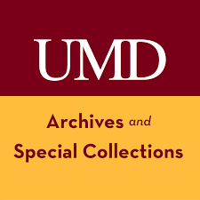
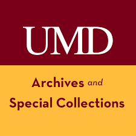

Assistant Professor of Library
Innovation, College
of Information Studies,
UMD.
Curator, Maryland & Historical
Collections (Librarian II)
Special Collections
and University Archives
Collection Strategies
and Services
Spring 2022 graduate of UMD’s
Master of Library
and Informationbr Science
(MLIS) program and Graduate Assistant
for
Reference, Outreach, and Engagement
for Maryland and Historical
Collections at
Special Collections and University Archives